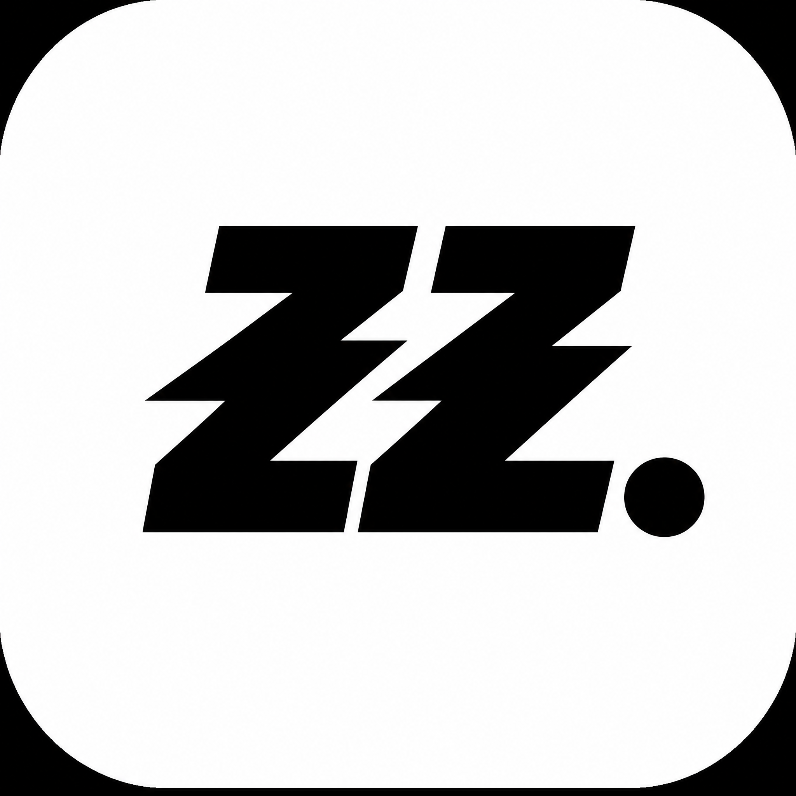

Close the lid.
Claude Code keeps working.
Lidlezz keeps your MacBook awake for Claude Code, throttles everything the moment the lid closes, and puts the Mac to sleep before it gets hot or the battery runs low.
Claude Code's own hooks tell Lidlezz when a session works, waits for a usage limit, or finishes. Then the Mac sleeps normally.
Lid closed: Claude Code and its children move to efficiency cores, Low Power Mode turns on, Time Machine and Photos analysis pause.
Reads the SoC die sensors every few seconds. 85° throttles harder, 95° saves the session and sleeps.
The battery level where lid-closed mode turns itself off, and how long Claude Code may sit idle before the Mac sleeps. Everything else is automatic.
How it works
A small signed helper toggles pmset disablesleep and Low Power Mode; macOS asks you to allow it once. Lidlezz never touches anything else with root. Temperatures come from IOKit, read-only. When it has to sleep, your session is saved and Lidlezz shows the exact claude --resume command on wake.
Requires an Apple Silicon Mac on macOS 14 or later and Claude Code 2.1.234 or later for usage-limit awareness.
Price
$19 one-time · 7-day free trial · one license per person, all your Macs
Lost your key? Get it emailed again.